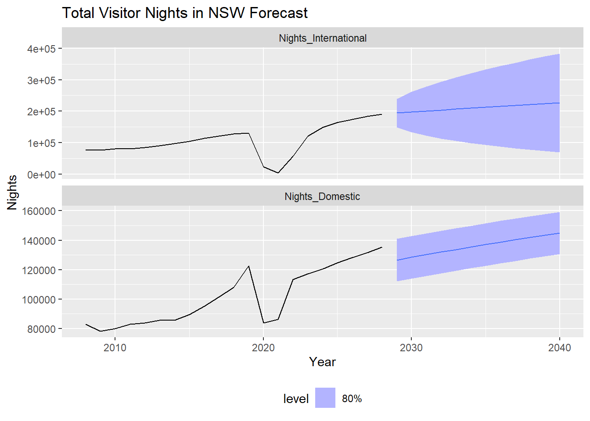

This report provides a forecasting methodology for caravan park visitors, applied to tourism in New South Wales (NSW), Australia. The forecasts are based on historical data from the International Visitor Survey (IVS), National Visitor Survey (NVS), and Compass IoT connected vehicle trips. The forecast includes the average daily number of visitors per campsite for each month from 2029 to 2040. Numbers for 2025-2028 are available directly from Tourism Research Australia (TRA) and are not forecasted, however the per-caravan site forecast can also be provided for these years if required.
Overview of Tourism Visitation Trends
Tourism visitation patterns for caravan parks across the Hawkesbury-Nepean Valley (HNV) were assessed through a multi-source data integration approach. This included:
Tourism Research Australia (TRA) Forecasts (2023–2028): These provided macro-level insights into visitor volumes, nights stayed, and expenditure at the state level, based on time-series econometric modelling and historical data from 2008 to 2022. Forecasts were adjusted for exogenous uncertainties such as post-COVID aviation recovery, macroeconomic shifts, and evolving consumer preferences.
Monthly Visitation Data: Granular monthly counts for individual caravan parks enabled improved temporal resolution and validation of seasonal variation.
Compass IoT Trip Data (2020–2024): High-resolution geospatial vehicle movement data was used to localize and disaggregate regional forecasts down to specific caravan parks.
To extend visitation projections beyond 2028 to 2041, Exponential Smoothing State Space Models (ETS) were applied to extrapolate long-term trends, and Seasonal-Trend decomposition using LOESS (STL) was used to model and retain seasonal dynamics. This ensured continuity and robustness in both trend and seasonal forecasting components.
Methodology: Data Refinement and Forecast Allocation
To downscale state-level tourism forecasts to site-specific estimates, the following methodology was applied:
Trip Disaggregation: Four years of Compass IoT trip data were used to compute visitation share ratios for each caravan park, based on observed trip counts during the baseline period (2020–2024). These static ratios were used to proportionally allocate aggregated TRA visitor forecasts to individual caravan park sites.
Seasonality Adjustment: STL decomposition outputs were calibrated with monthly visitation data to apply dynamic seasonal multipliers to daily forecasts, ensuring realistic intra-annual fluctuations.
Forecast Illustration: For example, Campsite ID 452 is projected to receive an average of 28 daily visitors in April 2035, rising to 46 in December 2035, driven by end-of-year holiday peaks.
Output Formats: Final visitation forecasts were exported in CSV and shapefile (.shp) formats, enabling spatial visualization and integration into GIS-based planning platforms.
Key Findings and Insights
Growth in Visitation: The integrated analysis indicates sustained growth in caravan park visitation across the HNV, in line with broader domestic tourism recovery trends.
Site-Specific Forecasts: Disaggregated daily forecasts provide park-level detail, supporting fine-grained operational, emergency, and resource planning.
Methodological Rigor: Data integration challenges were addressed using structured, replicable methodologies—particularly in catchment optimization, filtering logic, and seasonal calibration.
To demonstrate the practical application of our methodology, the following sections will walk through the R code used to generate these forecasts, starting with the overall NSW visitor nights.
Total NSW Visitor Nights (Domestic and International)
The initial step in our forecasting process involves loading historical tourism data and preparing it for time series analysis. This includes ensuring data types are correct and reshaping the data to be suitable for modeling. An Exponential Smoothing State Space Model (ETS) is then fitted to the annual visitor nights data. This model helps to project future visitor nights based on identified trends and patterns in the historical data. The resulting forecast, along with its decomposed components (like trend and level), is then visualized to assess the model’s fit and understand the projections.
fit |>forecast(h =12) |>autoplot(tourism_fc, level =80) +ggtitle("Total Visitor Nights in NSW Forecast") +theme(legend.position ="bottom")

Following the overall forecast, the underlying data for caravan and camping tourism in NSW is examined. The script cleans and filters the tourist nights data to isolate records specific to caravan parks and commercial camping grounds in New South Wales. This refined dataset is then presented in an interactive table, allowing for easier exploration of the specific figures.
Code
# trim whitespace from Metric columntr_nights$Metric <-trimws(tr_nights$Metric)tr_nights_nsw <- tr_nights |>filter(Region =="New South Wales", Metric %in%c("Caravan park or commercial camping ground","Caravan or camping - non commercial") )# widen printed outputoptions(width =250)datatable(tr_nights_nsw |>mutate(across(where(is.numeric), round, 0)), rownames =FALSE, options =list(scrollX =TRUE))
Monthly Seasonal Decomposition
To understand intra-year dynamics, the analysis then focuses on monthly patterns. Average 12 month rolling average of the NSW Occupancy Rate shows a stable trend from May 2022 onwards.
The NSW Occupancy Rate data is prepared for time series analysis, and a rolling average is calculated and plotted. This helps to visualize and understand the underlying trend in occupancy rates over time, smoothing out short-term fluctuations.
To further investigate cyclical variations, the monthly occupancy rate time series is formally decomposed. This process separates the data into its constituent parts: the underlying trend, regular seasonal patterns, and the remaining irregular component. Visualizing these components helps in clearly identifying the seasonality.
Now we apply the seasonal component to the ETS forecast.
The seasonal pattern identified from the decomposition of monthly occupancy rates is then integrated with the annual ETS forecast. This step translates the broader annual projections into more granular monthly forecasts, reflecting typical seasonal peaks and troughs in visitor nights. The resulting seasonally adjusted monthly forecast is plotted alongside the original data for comparison.
Code
# Extract and normalize the seasonal componentseasonal_component <- decomp |>select(index, season_year) |>mutate(normalized_season = season_year /mean(season_year))# average seasonal component for each monthseasonal_component <- seasonal_component |>as_tibble() |>group_by(month(index)) |>summarise(normalized_season =mean(season_year)) |>ungroup()# Generate future dateslast_date <-as.Date(max(or_monthly_nsw$index))future_dates <-yearmonth(seq.Date(from = last_date +months(1), by ="month", length.out =12))# Forecast using the fit modelforecast_fit <- fit |>forecast(h =12)# Expand each forecasted value to 12 monthly values and apply the normalized seasonal factorsmonthly_forecast <- forecast_fit |>as_tibble() |>rowwise() |>mutate(monthly_forecast =list(.mean * (1+seasonal_component$normalized_season))) |>unnest(cols =c(monthly_forecast)) |>mutate(Month =rep(month(future_dates), nrow(forecast_fit))) |># combine Year and Month columnsmutate(idx =yearmonth(paste(Year, Month, sep ="-"))) |># distinct on idx# distinct(idx, .keep_all = TRUE) |>as_tsibble(index = idx, key = Type)# Plot the final forecastmonthly_forecast |>autoplot(.vars=monthly_forecast) +ggtitle("NSW Occupancy Rate Forecast") +# add the original datageom_line(data = tourism_fc |>mutate(yrmo =make_yearmonth(year=Year, month=1)),aes(x = yrmo, y = Nights, color = Type), size =1) +theme(legend.position ="bottom")
Not enough sample in each tourism region to determine avg stay, so will use NSW data instead.
To convert the forecast of visitor nights into an estimate of the average number of daily visitors, data on the average length of stay is incorporated. NSW-level averages for different visitor types (domestic and international) are used. By dividing the forecasted monthly visitor nights by the average stay duration, an estimate of the average daily visitor numbers is calculated. These daily visitor forecasts are then plotted and a sample is presented in a table.
Code
ts_stay_nsw <- tr_stay |>filter( Region =="New South Wales", Metric %in%c("Caravan park or commercial camping ground","Caravan or camping - non commercial") )int_avg <- (ts_stay_nsw$`International Year ending March 2024`[[1]] + ts_stay_nsw$`International Year ending March 2024`[[2]]) /2dom_avg <- (ts_stay_nsw$`Domestic overnight Year ending March 2024`[[1]] + ts_stay_nsw$`Domestic overnight Year ending March 2024`[[2]]) /2# join with monthly_forecastmonthly_forecast$avg_stay <-0monthly_forecast$avg_stay[monthly_forecast$Type =="Nights_International"] <- int_avgmonthly_forecast$avg_stay[monthly_forecast$Type =="Nights_Domestic"] <- dom_avg# calculate daily visitorsmonthly_forecast$daily_visitors <- monthly_forecast$monthly_forecast / monthly_forecast$avg_stay#plotmonthly_forecast |>autoplot(.vars=daily_visitors) +ggtitle("Daily Visitors Forecast") +theme(legend.position ="bottom")
Daily Visitors to Caravan/Campervan Sites peaks in September each year.
In 2029 we can expect an average of 65,000 daily visitors to Caravan/Campervan Sites in NSW.
This is composed of ~30,000 International visitors and ~35,000 Domestic visitors.
By 2040, the maximum monthly average number of daily visitors is expected to increase to 86,000 (38,000 International and 48,000 Domestic visitors).
Per Caravan Site Forecast Methodology
To provide more localized insights, the NSW-level daily visitor forecast can be disaggregated to individual caravan sites. While the specific forecast outputs are not presented here due to data sensitivity, the methodology involves using historical trip ratios derived from sources like CompassIoT data.
The process begins by calculating site-specific trip ratios from historical data. This involves determining the proportion of total observed trips (e.g. vehicle trips to caravan park areas) that can be attributed to each individual caravan site over a defined baseline period.
These proportional ratios are then applied to the overall NSW daily visitor forecast (derived in the previous steps of this analysis). By multiplying the total NSW daily visitor numbers for a given period by each site’s proportional trip ratio, an estimate of daily visitors for that specific site is obtained.
This disaggregation allows for a more localized understanding of tourism patterns. The resulting site-specific forecasts can then be prepared for various uses, including tabular analysis for operational planning and geospatial visualization by joining them with caravan site location data, which aids in regional resource management and infrastructure planning. This methodological approach enables the translation of broader regional forecasts into actionable, site-level insights.
Data Integration Process and Challenges
The integration of Compass IoT data, monthly visitation records, and TRA forecasts required addressing several technical challenges:
Compass IoT Data Characteristics: The dataset comprises telemetry information (location, speed, timestamp, acceleration) from over 64 vehicle manufacturers.
Export Constraints: Compass IoT’s CSV export is capped at 1,000 links per query, requiring a series of batched exports to obtain full trip datasets for all caravan park catchments.
Catchment Delineation: Iterative tuning of park-level catchment radii was performed to optimize inclusion of relevant trips while avoiding overlapping or misattributed traffic.
Through-Traffic Filtering: Only trips terminating or originating within designated catchment zones were retained, excluding pass-through movements not associated with park visitation.
Multi-Year Ratio Stability: Aggregated visitation ratios were validated across multiple years to ensure consistency and reliability before applying to forecast disaggregation.
Cross-Validation of Seasonality: Seasonal trends identified from STL decomposition were reconciled with monthly observed data to confirm alignment in peak periods and off-seasons.